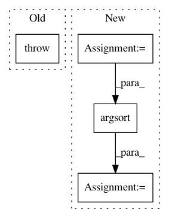

f6b8bc0eceadac57c9d748fc307bfe82b68cee96,sklearn/feature_selection/_rfe.py,RFE,_fit,#RFE#Any#Any#Any#,153
Before Change
else:
coefs = getattr(estimator, "feature_importances_", None)
if coefs is None:
raise RuntimeError("The classifier does not expose "
""coef_" or "feature_importances_" "
"attributes")
// Get ranks
if coefs.ndim > 1:
ranks = np.argsort(safe_sqr(coefs).sum(axis=0))
After Change
estimator.fit(X[:, features], y)
// Get importance and rank them
importances = _get_feature_importances(
estimator, self.importance_getter, transform_func="square",
)
ranks = np.argsort(importances)
// for sparse case ranks is matrix
ranks = np.ravel(ranks)
In pattern: SUPERPATTERN
Frequency: 3
Non-data size: 4
Instances
Project Name: scikit-learn/scikit-learn
Commit Name: f6b8bc0eceadac57c9d748fc307bfe82b68cee96
Time: 2020-05-19
Author: venky.yuvy@gmail.com
File Name: sklearn/feature_selection/_rfe.py
Class Name: RFE
Method Name: _fit
Project Name: flow-project/flow
Commit Name: 5f6bfb974e70d43bd4a7083512ca4f7e6134f774
Time: 2017-08-11
Author: akreidieh@gmail.com
File Name: cistar-dev/cistar/core/base_env.py
Class Name: SumoEnvironment
Method Name: sort_by_position
Project Name: WZBSocialScienceCenter/tmtoolkit
Commit Name: cefe625f707d3fd0241f4ad682d2d991233db200
Time: 2017-10-12
Author: markus.konrad@wzb.eu
File Name: tmtoolkit/lda_utils/common.py
Class Name:
Method Name: results_by_parameter